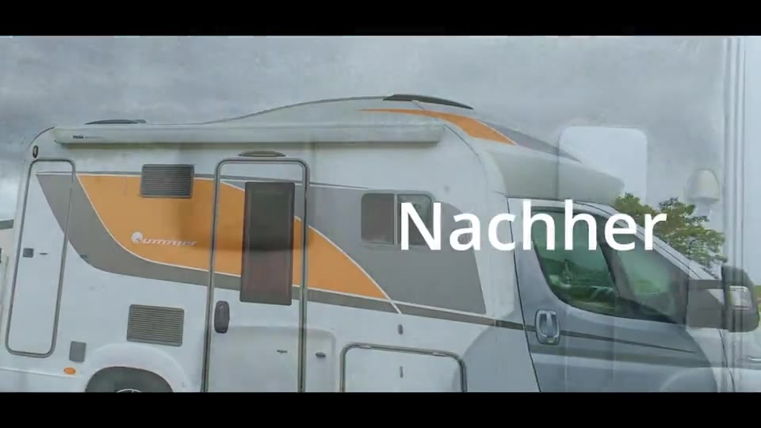
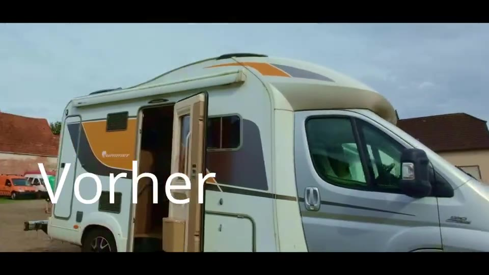

Wohnmobile & Wohnwagen
Bereit für
die nächste Saison.
Außen, Dach, Regenstreifen, Innenraum, Nasszelle – und eine Keramikversiegelung, die den Dreck der nächsten Tour abperlen lässt.
So läuft eine Wohnmobil-Aufbereitung.
- Dach & RinnenDach, Dachluken, Regenrinnen und schwarze Laufstreifen – dort, wo der meiste Dreck sitzt.
- Wäsche & PoliturGründliche Handwäsche, bei Bedarf Politur von GFK- und Aluflächen.
- KeramikversiegelungSchutzschicht für Lack und GFK – Wasser perlt ab, Schmutz haftet schlechter.
- InnenraumPolster, Küche, Nasszelle, Fenster. Auf Wunsch mit Ozonbehandlung.


Ihr Saisonplaner.
Sagen Sie uns, wann Ihre Saison startet und endet. Wir legen Ihnen zwei Erinnerungen direkt in Ihren Kalender – damit der Termin bei uns nicht in letzter Minute kommt.